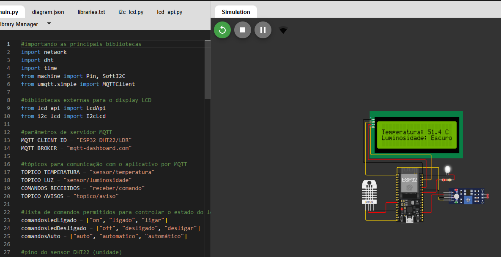

Sistemas Ciberfísicos

Projeto ESP32
Desenvolvido com ESP32, este projeto combina sensores DHT22 (temperatura) e LDR (luminosidade) para monitorar ambientes em tempo real, oferecendo três modos de operação: manual (controle remoto via MQTT), automático (liga luzes no escuro) e alertas (temperaturas extremas). Com conexão Wi-Fi e display LCD 20x4, o sistema é ideal para automação residencial, garantindo eficiência energética e conforto. Código aberto e escalável, permite integração com outros sensores para aplicações em estufas, escritórios ou smart homes. Nesse projeto foi utilizado micropython, oque facilitou sua realização pois ja possui familiaridade com python, ainda assim foi muito interessante trabalhar em um projeto que mexe tanto com a questão de hardware.
https://wokwi.com/projects/432865573814294529